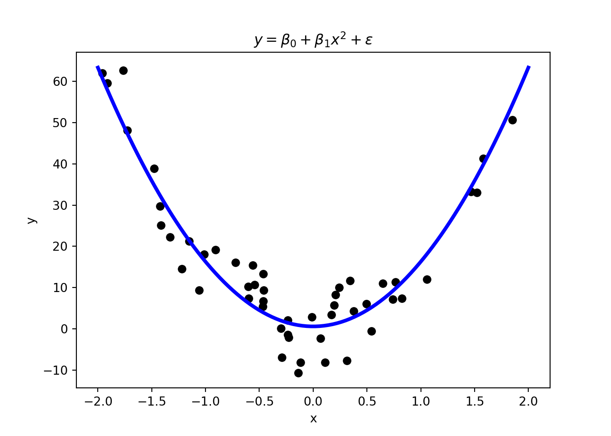

{kind=link}

1 Introduction
The hype around artificial intelligence (AI) reached new highs with the release of OpenAI’s ChatGPT in late 2022. These drastic improvements in artificial intelligence have been fueled by machine learning (ML) methods that have become popular in recent years and have a wide variety of applications such as, for example,
- Computer vision,
- Speech recognition,
- Data mining,
and many more. These tools also have many potential applications in economics and finance and can be invaluable in extracting information from the evergrowing amounts of data available. As current (or future) Banco de España employees, you are in a unique position to work with large datasets that are often not available to the general public. Therefore, you have a unique opportunity to apply these methods to a wide range of unexplored problems.
The field can be very technical, but barriers to entry are not as high as they may seem. This course aims to provide you with the tools to apply machine learning methods to problems in economics and finance.
1.1 Taking Advantage of Machine Learning in Banking Supervision

You might have heard of some of the well-known advances in the field of AI from recent years such as
- DeepMind’s AlphaGo can beat the best human Go players
- OpenAI’s ChatGPT responds to complex text prompts
- Midjourney, DALL-E, and Stable Diffusion generate images from text
- …
While these examples are impressive, you might wonder how these methods can help you in your work. There is a wide range of potential applications. Machine learning methods have been used in practice to
- Predict loan or firm defaults,
- Detect fraud (e.g., credit card fraud, or money laundering),
- Interpret large quantities of data, or
- Forecast economic variables
to just name a few examples. Bank for International Settlements (2021) provides an overview of how machine learning methods have been used at central banks.1 The report also notes how machine learning methods can be used in the context of financial supervision
These techniques can support supervisors’ efficiency in: (i) covering traditional supervisory tasks (eg quality reporting, anomaly detection, sending of instructions); (ii) facilitating the assessment of micro-level fragilities; and (iii) identifying and tackling new emerging topics, such as climate-related financial risks, vulnerabilities from the Covid-19 pandemic, or the consequence of increased digitisation in finance (eg the development of fintechs).
To give you a few more ideas from academic research, machine learning techniques have been used to, for example,
- Detect emotions in voices during press conferences after FOMC meetings (Gorodnichenko, Pham, and Talavera 2023),
- Identify Monetary Policy Shocks using Natural Language Processing (Aruoba and Drechsel 2022),
- Solve macroeconomic models with heterogeneous agents (Maliar, Maliar, and Winant 2021; Fernández-Villaverde, Hurtado, and Nuño 2023; Fernández-Villaverde et al. 2024; Kase, Melosi, and Rottner 2022), or
- Estimate structural models with the help of neural networks (Kaji, Manresa, and Pouliot 2023).
In this course, we will only be able to scratch the surface of the field. However, I hope to provide you with the tools to get you started with machine learning and to apply these methods to novel problems.
1.2 What Is Machine Learning?
You might already have some idea of what machine learning is. In this section, we will provide a more formal definition, distinguish between machine learning, artificial intelligence, and deep learning, and discuss the relation to statistics and econometrics.
1.2.1 Definition
Let’s start with the straightforward definition provided by Murphy (2012)
[…] a set of methods that can automatically detect patterns in data, and then use the uncovered patterns to predict future data, or to perform other kinds of decision making under uncertainty […]
Therefore, machine learning provides a range of methods for data analysis. In that sense, it is similar to statistics or econometrics.
A popular, albeit more technical, definition of ML is due to Mitchell (1997):
A computer program is said to learn from experience \(E\) with respect to some class of tasks \(T\), and performance measure \(P\), if its performance at tasks in \(T\), as measured by \(P\), improves with experience \(E\).
In the context of this course, experience \(E\) is given by a dataset that we feed into a machine-learning algorithm, tasks \(T\) are usually some form of prediction that we would like to perform (e.g., loan default prediction), and the performance measure \(P\) is the measure assessing the accuracy of our predictions.
1.2.2 Common Terminology
Artificial intelligence (AI), machine learning (ML), and deep learning (DL) are often used interchangeably in the media. However, they describe more narrow subfields (Microsoft 2024):
- Artificial Intelligence (AI): Any method allowing computers to imitate human behavior.
- Machine Learning (ML): A subset of AI including methods that allow machines to improve at tasks with experience.
- Deep Learning (DL): A subset of ML using neural networks with many layers allowing machines to learn how to perform tasks.
More recently, with the rise of large language models (LLMs) such as ChatGPT, the term Generative AI has also become popular. Generative AI refers to AI models that can generate new content, such as text, images, or music, based on the patterns learned from their training data. ChatGPT is an example of a generative AI model that generates human-like text responses based on the input it receives. In this course, we will be more concerned with what is sometimes called Predictive AI. Predictive AI refers to machine learning models used to make predictions or classifications based on input data, such as predicting loan defaults or classifying images.
A term you may also encounter is Artificial General Intelligence (AGI), which refers to highly autonomous systems that possess the ability to understand, learn, and apply knowledge across a wide range of tasks at a level comparable to human intelligence. Unlike current AI systems, which are specialized for specific tasks, AGI would be capable of general reasoning and problem-solving. While AGI is a topic of significant research and debate, it remains largely theoretical at this stage.2 Please note that AGI and related concepts are beyond the scope of this course and will not be covered.
1.2.3 Relation to Statistics and Econometrics
We have already mentioned that machine learning is similar to statistics and econometrics, in the sense that it provides a set of methods for data analysis. The focus of machine learning is more on prediction rather than causality meaning that in machine learning we are often interested in whether we can predict A given B rather than whether B truly causes A. For example, we could probably predict the sale of sunburn lotion on a day given the sales of ice cream on the previous day. However, this does not mean that ice cream sales cause sunburn lotion sales, it is just that the sunny weather on the first day causes both.
Varian (2014) provides another example showing the difference between prediction and causality:
A classic example: there are often more police in precincts with high crime, but that does not imply that increasing the number of police in a precinct would increase crime. […] If our data were generated by policymakers who assigned police to areas with high crime, then the observed relationship between police and crime rates could be highly predictive for the historical data but not useful in predicting the causal impact of explicitly assigning additional police to a precinct.
Nevertheless, leaving problems aside where we are interested in causality, there is still a very large range of problems where we are interested in mere prediction, such as loan default prediction, or credit card fraud detection.
1.3 Why Has Machine Learning Become Popular Only Recently?
Early contributions to the field reach back at least to McCulloch and Pitts (1943) and Rosenblatt (1958). They attempted to find mathematical representations of information processing in biological systems (Bishop 2006). The field has grown substantially mainly in recent years due to
- Advances in computational power of personal computers
- Increased availability of large datasets \(\rightarrow\) “big data”
- Improvements in algorithms
The need for large data sets still limits the applicability to certain fields. For example, in macroeconomic forecasting, we usually only have quarterly data for 40-50 years. Conventional time series methods (e.g., ARIMA) often still tend to perform better than ML methods (e.g., neural networks).
1.4 Types of Learning
Machine learning methods are commonly distinguished based on the tasks that we would like to perform, and the data that we have access to for learning how to perform said task. For example, our task might be to figure out whether a credit card transaction is fraudulent or not. Based on the data we have access to, two different types of learning might be appropriate:
- We know which transactions are fraudulent meaning that we need to learn a function that maps the transaction data (e.g., value of transaction, location, etc.) to the label “fraudulent” or “not fraudulent”. This is an example of supervised learning.
- We do not know whether they are fraudulent or not meaning that we might want to find clusters in the data that group similar transactions. This is an example of unsupervised learning.
More generally, ML methods are commonly categorized into
- Supervised Learning: Learn function \(y=f(x)\) from data that you observe for \(x\) and \(y\)
- Unsupervised Learning: “Make sense” of observed data \(x\)
- Reinforcement Learning: Learn how to interact with the environment
The focus of this course will be on supervised learning, but we will also have a look at some unsupervised learning techniques if time allows. Let’s have a closer look at the three types of learning.
Types of Learning in Practice
Machine learning models might combine different types of learning. For example, ChatGPT is trained using a combination of self-supervised (a form of unsupervised learning), supervised and reinforcement learning. Furthermore, some machine learning methods, such as neural networks, might be used as part of different types of learning.
1.4.1 Supervised Learning
Supervised learning is probably the most common form of machine learning. In supervised learning, we have a training dataset consisting of input-output pairs \((x_n, y_n)\) for \(n=1,\ldots,N\). The goal is to learn a function \(f\) that maps inputs \(x\) to outputs \(y\).
The type of function \(f\) might be incredibly complex, e.g.
- From images of cats and dogs \(x\) to a classification of the image \(y\) (\(\rightarrow\) Figure 1.3)
- From text input \(x\) to some coherent text response \(y\) (\(\rightarrow\) ChatGPT)
- From text input \(x\) to a generated image \(y\) (\(\rightarrow\) Midjourney)
- From bank loan application form \(x\) to a loan decision \(y\)
Regarding terminology, note that sometimes
- Inputs \(x\) are called features, predictors, or covariates,
- Outputs \(y\) are called labels, targets, or responses.
Based on the type of output, we can distinguish between
- Classification: Output \(y\) is in a set of mutually exclusive labels (i.e., classes), i.e. \(\mathcal{Y}=\{1,2,3,\ldots,C\}\)
- Regression: Output \(y\) is a real-valued quantity, i.e. \(y\in\mathbb{R}\)
Let’s have a closer look at some examples of classification and regression tasks.
Classification

Figure 1.3 shows an example of a binary classification task. The algorithm is trained on a dataset of images of cats and dogs. The goal is to predict the label (i.e., “cat” or “dog”) of a new image (new in the sense that the images were not part of the training dataset). After training, the algorithm can predict the label of new images with a certain degree of accuracy. However, if you give the algorithm an image of, e.g., a horse it might mistakenly predict that it is a dog because the algorithm has never seen an image like that before and because it has been trained only for binary classification (it only knows two kinds of classes, “cats” and “dogs”). In this example, \(x\) would be an image in the training dataset and \(y\) would be the label of that image.
Extending the training dataset to also include images of horses with a corresponding label would turn the tasks into multiclass classification.
Regression

In regression tasks, the variable that we want to predict is continuous. Linear and polynomial regression in Figure 1.4 are a form of supervised learning. Thus, you are already familiar with some basic ML techniques from the statistics and econometrics courses.
Another common way to solve regression tasks is to use neural networks, which can learn highly non-linear relationships. In contrast to, for example, polynomial regression, neural networks can learn these relationships without the need to specify the functional form (i.e., whether it is quadratic as in Figure 1.4) of the relationship. This makes them very flexible and powerful tools. We will have a look at neural networks later on.
1.4.2 Unsupervised Learning
An issue with supervised learning is that we need labeled data which is often not available. Unsupervised learning is used to explore data and to find patterns that are not immediately obvious. For example, unsupervised learning could be used to find groups of customers with similar purchasing behavior in a dataset of customer transactions. Therefore, the task is to learn some structure in the data \(x\). Note that we only have features in the dataset and no labels, i.e., the training dataset consists of \(N\) data points \(x_n\).
Unsupervised learning tasks could be, for example,
- Finding clusters in the data, i.e. finding data points that are “similar” (\(\rightarrow\) clustering)
- Finding latent factors that capture the “essence” of the data (\(\rightarrow\) dimensionality reduction)
Let’s have a look at some examples of clustering and dimensionality reduction.
Clustering
Clustering is a form of unsupervised learning where the goal is to group data points into so-called clusters based on their similarity. We want to find clusters in the data such that observations within a cluster are more similar to each other than to observations in other clusters.
Figure 1.5 shows an example of a clustering task. The dataset consists of measurements of sepal (and petal) length and width of three species of iris flowers. The goal is to find clusters based on just the similarity in sepal and petal lengths and widths without relying on information about the actual iris flower species. The left-hand panel of Figure 1.5, shows the actual classification of the iris flowers. The right-hand side shows the result of a k-means clustering algorithm that groups the data points into three clusters.

{kind=link}
Dimensionality Reduction
Suppose you observe data on house prices and many variables describing each house. You might observe, e.g., property size, number of rooms, room sizes, proximity to the closest supermarket, and hundreds of variables more. A ML algorithm (e.g., principal component analysis or autoencoders) could find the unobserved factors that determine house prices. These factors sometimes (but not always) have an interpretation. For example, a factor driving house prices could be amenities. This factor could summarize variables such as proximity to the closest supermarket, number of nearby restaurants, etc. Ultimately, hundreds of explanatory variables in the data set might be represented by a small number of factors.
1.4.3 Reinforcement Learning
In reinforcement learning, an agent learns how to interact with its environment. The agent receives feedback in the form of rewards or penalties for its actions. The goal is to learn a policy that maximizes the total reward.
For example, a machine could learn to play chess using reinforcement learning
- Input \(x\) would be the current position (i.e., the position of pieces on the board)
- Action \(a\) would be the next move to make given the position
- One also needs to define a reward (e.g., winning the game at the end)
- Goal is then to find \(a=\pi(x)\) to maximize the reward
This is also the principle behind AlphaGo that learned how to play Go.
Another example is MarI/O which learned how to play Super Mario World. The algorithm learns to play the game by receiving feedback in the form of rewards (e.g., points for collecting coins, penalties for dying) and then improves in playing the game by “an advanced form of trial and error”.
In this course, we will focus on supervised learning. However, we will look at some unsupervised learning techniques if time allows. Reinforcement learning is going beyond the scope of this course and will not be covered.
Mini-Exercise
Are the following tasks examples of supervised, unsupervised, or reinforcement learning?
- Predicting the price of a house based on its size and location (given a dataset of house prices and features).
- Finding groups of customers with similar purchasing behavior (given a dataset of customer transactions and customer characteristics).
- Detecting fraudulent credit card transactions (given a dataset of unlabeled credit card transactions).
- Detecting fraudulent credit card transactions (given a dataset of labeled credit card transactions).
- Recognizing handwritten digits in the MNIST dataset (see next section).
- Grouping news articles by topic based only on their content (without knowing the topics in advance).
- Predicting whether a customer will cancel their subscription next month, given historical data on customer behavior and cancellations.
- Classifying emails as spam or not spam, using a dataset where each email is labeled as spam or not.
- Segmenting images into regions with similar colors, without any information about what the regions represent.
- Training a robot to navigate a maze by receiving rewards for reaching the exit and penalties for hitting walls.
1.5 Popular Practice Datasets
There are many publicly available datasets that you can use to learn how to implement machine learning methods. Here are some well-known platforms with a large collection of datasets
- Kaggle,
- HuggingFace, and
- OpenML.
Another good source for practice datasets is the collection of datasets provided by scikit-learn. These datasets can be easily loaded into Python from the scikit-learn package. Furthermore, Murphy (2022) provides an overview of some well-known datasets that are often used in machine learning. For example, MNIST is a dataset of handwritten digits (see Figure 1.7) that is often used to test machine learning algorithms. The dataset consists of 60,000 training images and 10,000 test images. Each image is a 28x28 pixel image of a handwritten digit. The goal is to predict the digit in the image.

{kind=link}
See https://www.bis.org/ifc/publ/ifcb57.htm for a more detailed overview.↩︎
For more information, see, e.g., https://cloud.google.com/discover/what-is-artificial-general-intelligence?hl=en.↩︎